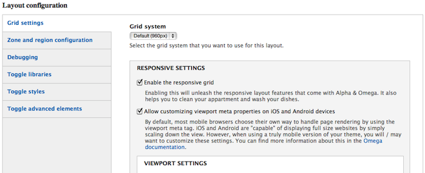
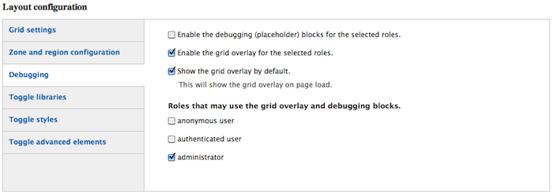

Mi nombre es Jesús Manuel Olivas
Me pueden encontrar en twitter como @jmolivas
En mi blog http://jmolivas.com
Mi nombre es Jesús Manuel Olivas
Me pueden encontrar en twitter como @jmolivas
En mi blog http://jmolivas.com
Relativamente nuevo en Drupal desde principios de 2010 trabajando con este framework.
Tengo ese mismo tiempo programando con PHP y con symfony2 en fechas recientes.
Próximamente :
@hechoendrupal
http://hechoendrupal.com
Se define como Diseño Responsivo Web o por sus siglas en ingles RWD (Responsive Web Design).
Una forma de desarrollar sitios web asegurando, que el diseño está optimizado para que el formato se ajuste en relación al tamaño de la pantalla del dispositivo mediante el uso de las siguientes técnicas:
Un CSS Grid Framework es una herramienta que nos facilita el maquetado y el desarrollo de un sitio web al proveernos una guía sobre la cual trabajar.
Esta guía consiste en un sistema de columnas, espacios y márgenes que nos ayudan a posicionar los bloques de contenido de nuestro diseño de manera rápida y organizada.
Es una práctica común definir instrucciones en las propiedades de clases dentro de las hojas de estilo para ajustar las imagenes en relación al tamaño del contenedor.
http://filamentgroup.com/examples/responsive-images
Es importante servir las imágenes adecuadas en relación al tamaño del dispositivo que esta consultado el sitio, regularmente la velocidad de coneccion en los dispositivos móviles es menor.
Son instrucciones condicionantes para determinar que hoja de estilo ó cuales clases dentro de esta seran las que se utilizen.
<link rel="stylesheet" href="style.css"
media="(min-width: 960px)">
@media screen and (min-width: 960px) {
// definición de clases y atributos.
}
Unidad de medida en pixeles
Hay muchas ventajas estéticas y de diseño que obtendremos al usar un framework, entre las cuales puedo mencionar las siguientes:
drush omega-subtheme "Subtheme Name" [html5]
drush omega-subtheme "Subtheme Name" xhtml
admin/appearance/settings/nombre_tema 
Una buena manera de depurar y probar es mostrar las columnas. 
http://drupal.org/project/cs_adaptive_image
http://drupal.org/project/fitvids
http://drupal.org/project/flexslider
Omega utiliza un método llamado "Mobile first" para responder ante las diferentes medidas de los dispositivos. Para ocultar el bloque por defecto utilizamos la hoja de estilo llamada global.css
.flexslider { display:none; }
Para mostrarlo en resolución igual ó mayor a una "tablet" utilizamos la hoja llamada theme_name-alpha-default-narrow.css
.flexslider { display:block; }
Entrada en blog de Rootstack, compañía de desarrollo de software en Panamá
Usando un CSS Grid Framework a la hora de diseñar
Slides hechas con kinout
kinout on github
Tipografías utlizadas Bitter & Open Sans
Open Sans en google webfont directory
Bitter en google webfont directory
Drupal Summit Latino, Guadalajara 2012
Jesús Manuel Olivas | @jmolivas | http://jmolivas.com